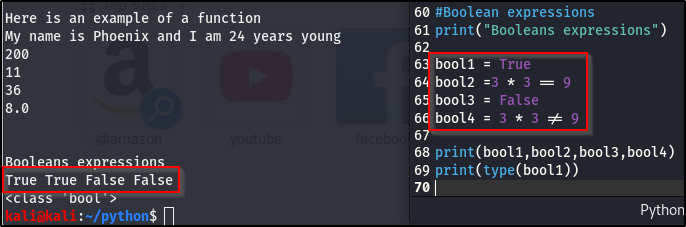

Boolean Expressions.
A Boolean expression is a logical statement that is either true or false.

The above image has 4 bool statements. For bool2, 3 * 3 is equal to (, so that is true but bool4 means that 3 * 3 is not equal to 9, which is obviously false. So, in layman terms, boolean expressions are statements whose results are either true or false.
print(type(def function)), is how you print out what of variable is stored in the function.
NB: There is a difference between True and "True". The first is a boolean while the other is a string, characters within quotes are seen as the type of string.
As shown below:

You will use boolean expressions in exploit development, loops and conditional statements. Conditional statements, if something is true, then run a certain code and if it's false, run a different code.
Now, let's build upon this. Just remember, everytime you hear or see oolean expressions, it's simple True or False.
Relational and Boolean Operators.
A relational operator takes two non-Boolean primitive operands, compares them and yields true or false.
In English, a relational operator compares two expression and determins if they both are true or false (returns a boolean value). For instance, we want to compare if (7>3) and (4<9), a relational operators compares both to see if they are trueand return the appropriate boolean expression. In this case, both are true, making the entire statement true.
In a case where one is false and the other is true, the entire statement will be false, the "and" is what determines that.
To know if a statment with two epressions are true of false:- In the instance of OR, the outcome if true, if both exprssions are true.
- Still for OR, if one or the other expressions are true, then the outcome is true.
- For the outcome of OR to be false, both expressions have to be false.
- In the instance of AND, both expressions have to be true, in order for the outcome to be true
- Still AND, if one of the expressions are false, the outcome of the comparison becomes false

I highly recommend going out on the internet to study this, it can be a bil confusing at first. Make sure you unerstand them, cause we'll continue to build on themas we go along.
Don't only focus on the True and False, but the greater/less than sysmbols, and/or & not
The goal of learning Python is not essentially to be a developer, which is not as important, but being able to read and understand what is going on or what you see, is very important.
You can start here, with a true false chart.

Moving on to conditional statements, if, then else.